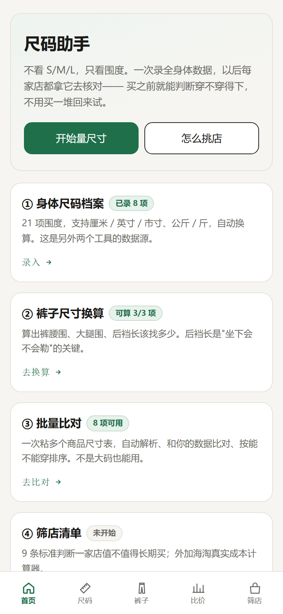
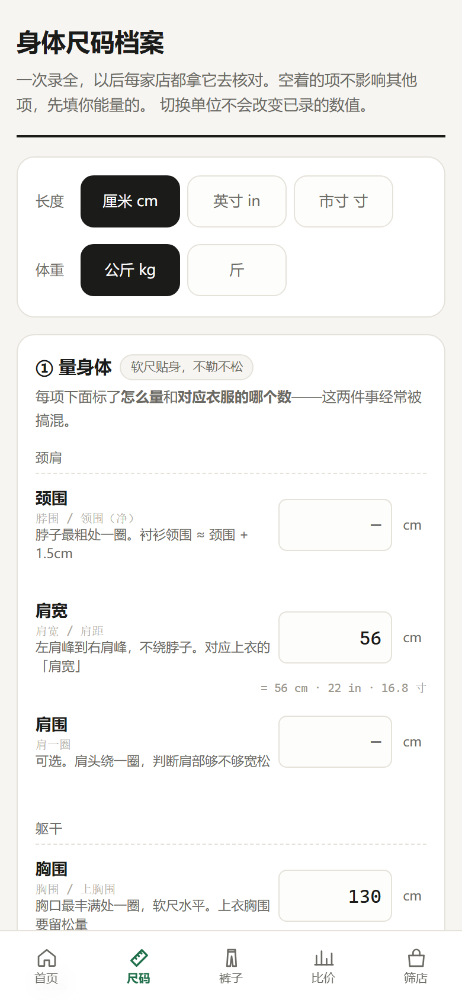
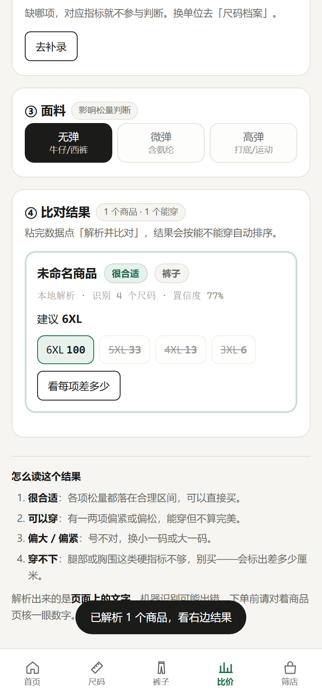

不用装 App，也不用改任何设置。本质上就是「用浏览器打开一个网址」， 然后把它加到桌面，以后点图标就能用。
手机连上 Wi-Fi 或流量，打开 Safari / Chrome / 夸克 / 微信内置浏览器都行，输入下面这行：
zaiyou1227.github.io/fitcheck/打开后你能看到一个绿色的「尺码助手」首页，底部有五个标签： 首页 / 尺码 / 裤子 / 比价 / 筛店。
看到首页就算成功。这一步不需要登录任何账号。
这是唯一容易卡住的地方——按钮藏在菜单里，iPhone 和 Android 位置不一样，下面分开讲。
点图标是全屏打开，没有地址栏，和 App 一样。第一次打开过之后，断网也能用。

打开后应该长这样验证成功的方法：底部能看到五个标签，点「尺码」能进去填数字。
如果页面是空白的：等 5 秒再刷新一次。第一次打开要下载几百 KB 的文件， 网络慢的时候会慢一点。
必须在 Safari 里操作。微信、QQ 里打开的页面没有这个功能。
如果是从微信里点的链接，先点右上角「···」→「在浏览器中打开」。
就是那个方框里一个向上箭头的图标，在 Safari 底部正中间。 如果看不到底栏，先轻轻往上滑一下屏幕。
它在列表靠下的位置，图标是一个带加号的方框。 滑到底部还没看到？点最下面的「编辑操作」，把它加到收藏里。
名字会自动填成「尺码助手」，不用改。点「添加」后回到桌面，就能看到图标了。
大多数安卓浏览器会自动弹出「安装」提示，比 iPhone 简单。
打开后如果底部弹出一条「添加到主屏幕」的提示，直接点就行，不用往下看了。
三个竖排的点，在地址栏右边。
如果显示的是「安装应用」，说明浏览器识别成了 PWA，装完和真正的 App 几乎一样。
弹出确认框点「添加」/「安装」，图标就出现在桌面或应用列表里了。
进「尺码」页，只填这 5 项就够开始用：腹围、臀围、大腿围、立裆深、胸围。 其他项想到再补，空着不影响计算。

进「比价」页，把商品页的尺寸表整段复制粘进去，点「解析并比对」， 它会直接告诉你哪个码能穿、差多少厘米。

先确认你是在 Safari（iPhone） 或 Chrome（Android） 里。
微信、QQ、抖音里打开的网页没有这个功能——它们用的是内置浏览器。 解决办法：点右上角「···」，选「在浏览器中打开」，然后重来一遍。
第一次打开需要联网下载文件，等 5 秒刷新一次。
如果一直白屏：删掉图标重新添加一次。或者用浏览器打开网址， 长按页面选「刷新」。
能，但有个前提：至少成功打开过一次。第一次打开时会把所有文件缓存到手机里， 之后就完全离线了。
验证方法：打开一次，然后开飞行模式，再点桌面图标——如果还能进去，就是缓存成功了。
数据不会自动同步（因为没有服务器）。去「尺码」页底部点「复制分享链接」， 或者「导出文件」，把链接/文件存到备忘录或网盘，在新手机上打开即可恢复。
分享链接等于你的身体数据，别发到公开群。
小程序需要企业主体才能上架，而且数据要经过微信的服务器， 和「数据只存在本地」的目标冲突。
不需要。加到桌面后体验和 App 一样：全屏、有图标、能离线。 打 APK 需要自己搭 Android 构建环境，功能完全一样，但每次改代码都要重新打包。